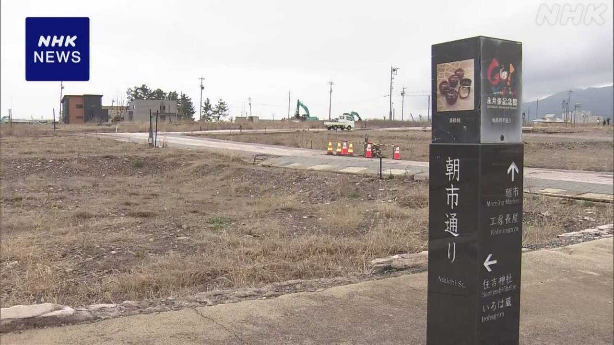

最新ニュース
1️⃣ 国がためている石油 26日から出し始めた

アメリカなどとイランの戦いで、日本に入ってくる石油が少なくなっています。
政府は、国がためている石油を、26日から出し始めました。
3月と4月に、850万キロリットルぐらいを市場に出す予定です。日本で使う石油の1か月分です。
石油の会社も、ためている石油を3月16日から、15日分出しています。
両方を合わせると、今まででいちばん多い量です。
政府は、ためている石油をたくさん出して、石油が足りなくならないようにしたいと考えています。
2️⃣ 石川県輪島市の「朝市通り」 作り直す工事が始まった

石川県輪島市で、「朝市通り」を作り直す工事が、26日から始まりました。
朝市通りは、海でとれた物や食器などを売る店がたくさんあって、旅行に来た人などに人気がありました。
しかし、2024年1月の能登半島地震で火事があって、多くの店が焼けました。
輪島市は、朝市通りの近くにある広い場所に、店や家などを作り直します。工事は3年かかる予定です。
店の人たちは、早くまた店を始めたいと言っています。
3️⃣ 日本の半分以上の市や町 外国人の子どもが増えている
日本に住む外国人の子どもが増えています。NHKが、0歳から14歳までの国のデータを調べてわかりました。
日本に住む外国人の子どもは、去年、29万9000人いました。10年前より11万7000人増えました。日本の市や町などの56%以上で増えています。
日本人の子どもは、10年前より260万人ぐらい少なくなりました。
専門家は、「これからも外国人の子どもが増えていくと思います。日本語の教育をしっかりとする必要があります」と話しています。
4️⃣ 使わなくなった学校の制服 ほかの子どもに使ってもらう
みなさんは、卒業して使わなくなった子どもの制服を、どうしていますか。
京都府宇治市は、使わなくなった中学校の制服などを集めて、服が必要な家庭に渡しています。
服のリサイクルと、子どものいる家庭を助けるためです。
2025年度は、2月の終わりまでに、1500ぐらいの服を渡しました。物の値段が高くなっていることなどから、服がほしい家庭が増えています。
市役所の人は「中学生は3年の間に体が大きくなって、また制服を買わないといけないこともあります。集めた服をぜひ使ってください」と話しています。
- 〜ため
- 〜から
- 〜くらい / 〜ぐらい
- 〜予定
- 〜まで
- 〜ように
- 〜ならない
- 〜ようにする
- 〜から〜まで
- 〜より
- 〜以上
- 〜中
- 〜までに
- 〜こと
- 〜いけない
vebaev.github.io
Generated: 2026-03-26 10:50:43 UTC